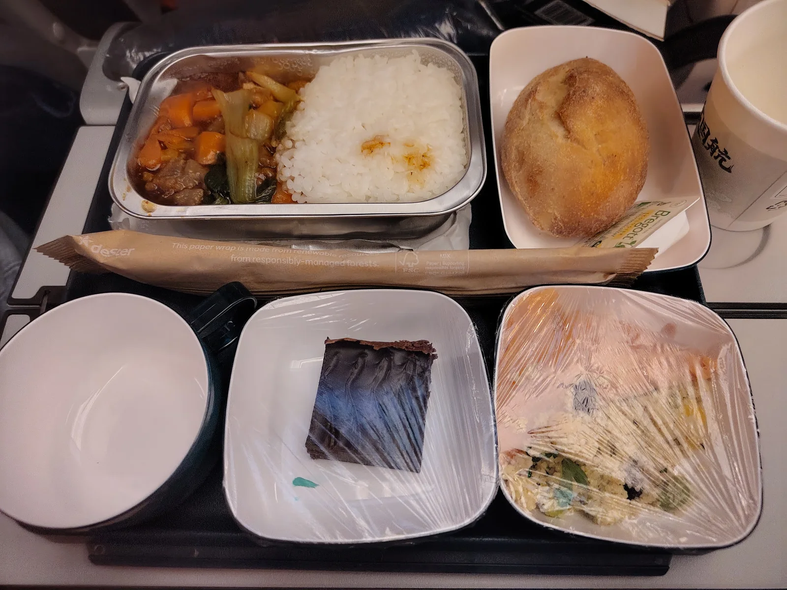

10 August 2026

What's the deal with airline food?!
The first proper meal on this trip is chinese food — in the western sense — in a small heated package. Somewhat difficult to describe other than repeating the stewardess' "Rice with beef" followed by "beef is spicy".
Served with a clashing piece of smoked salmon in a bulgur salad with a piece of bread and small chocolate cake. Not pictured is a cup of hot jasmine tea and a copy of the Rénmín Rìbào (人民日报) that I was so graciously given as reading material while flying directly above St. Petersburg.